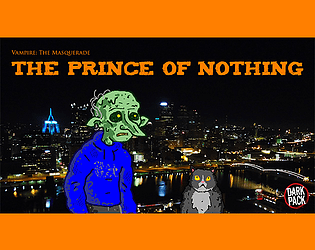
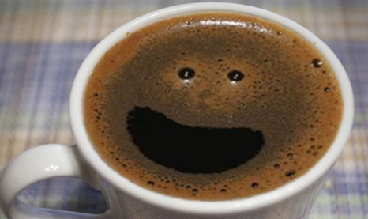
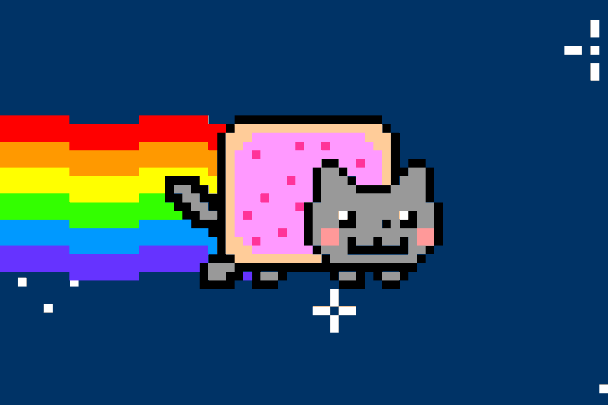

I’m a data scientist working in Ad-Tech. I have degrees in Mathematics and Economics, and I am pursuing a Master’s in Computer Science with a concentration in Machine Learning at Georgia Tech.
🐰Bunny for Arch🐰: my personal Arch Linux ricing setup: matte black, neon accents, niri, and a data-science-first workflow.
I co-created a videogame about being a vampire in Pittsburgh

Here’s my medium post on predicting Starbucks consumer behavior

Here’s my World of Darkness custom character generator
email: charlesmfry@gmail.com
